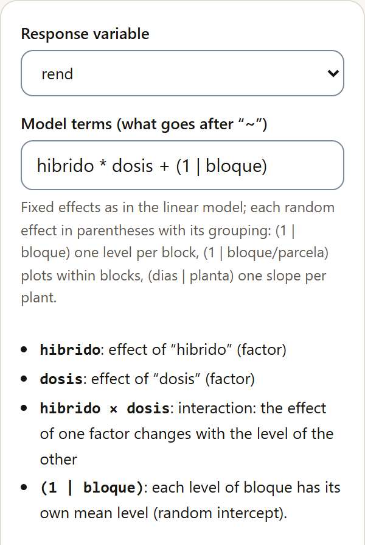
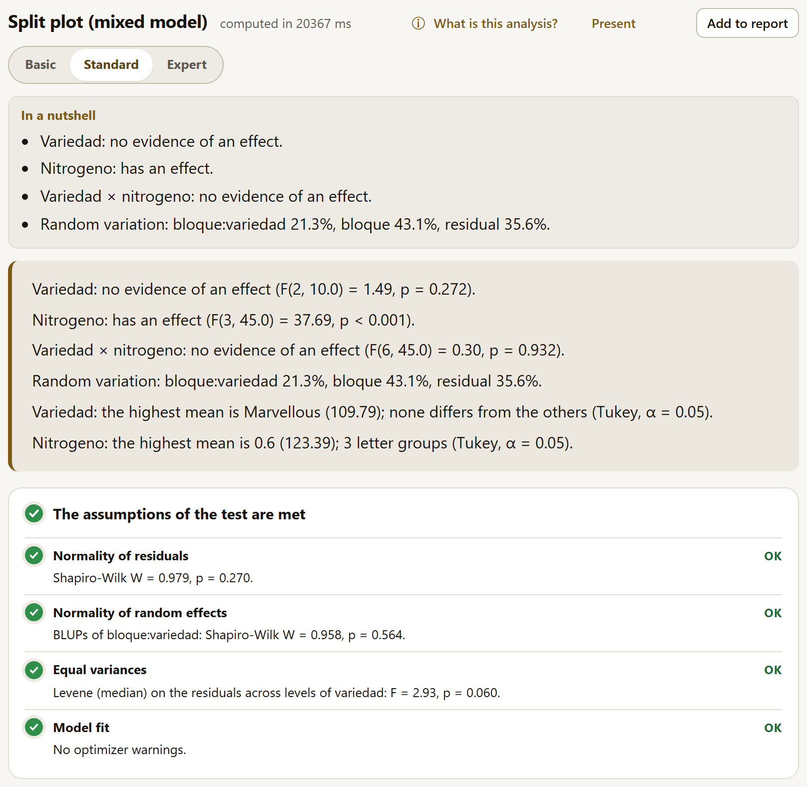
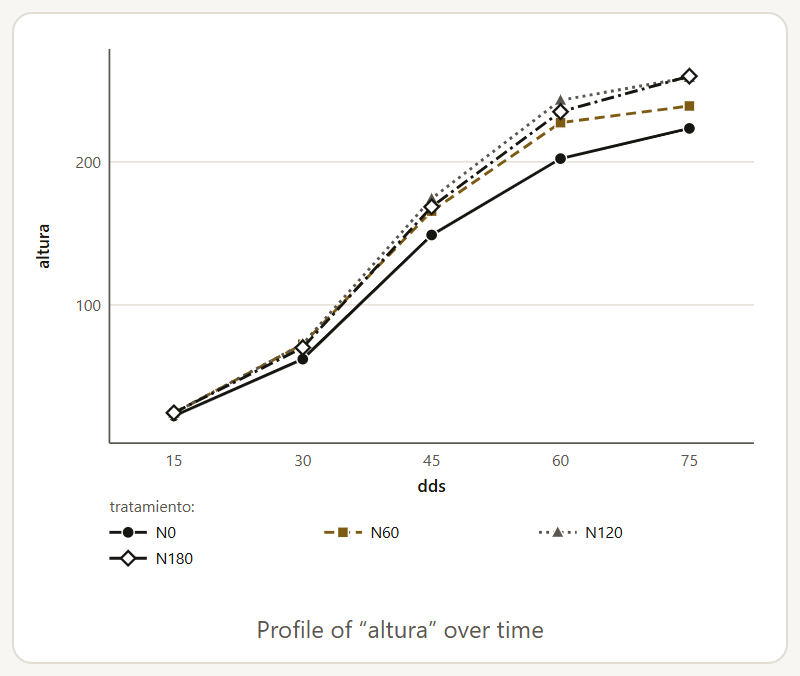
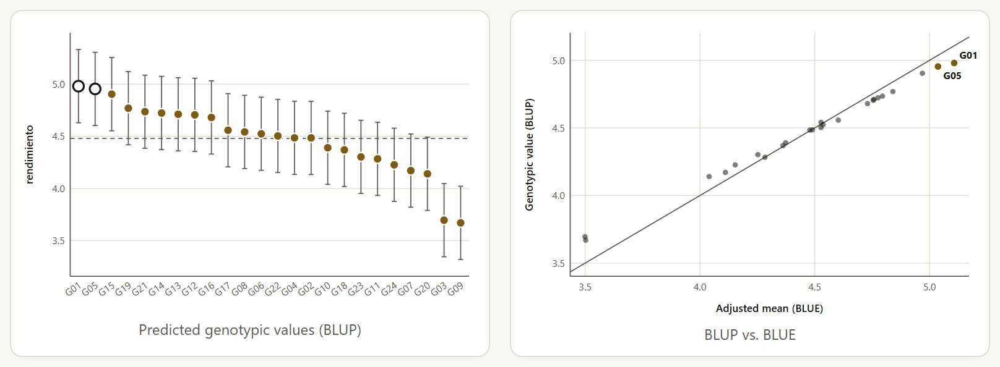
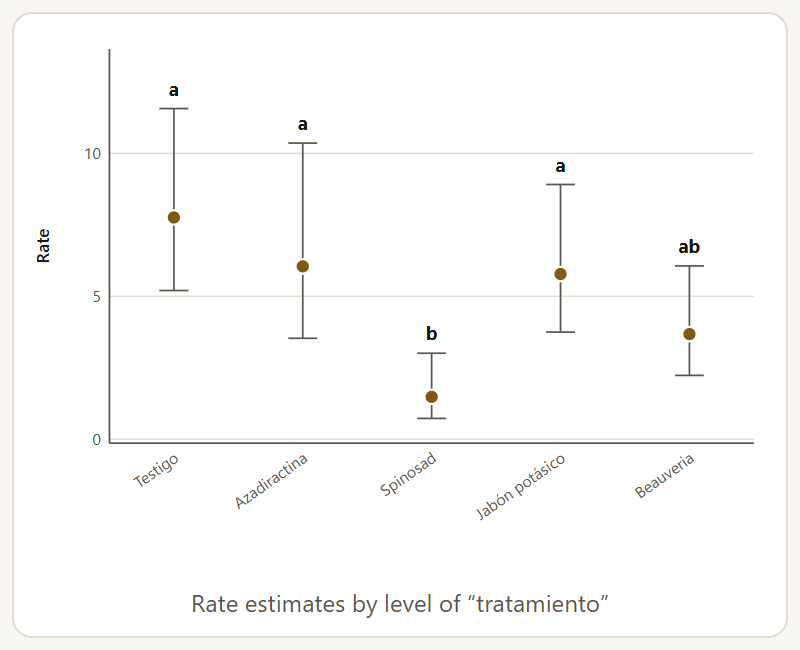
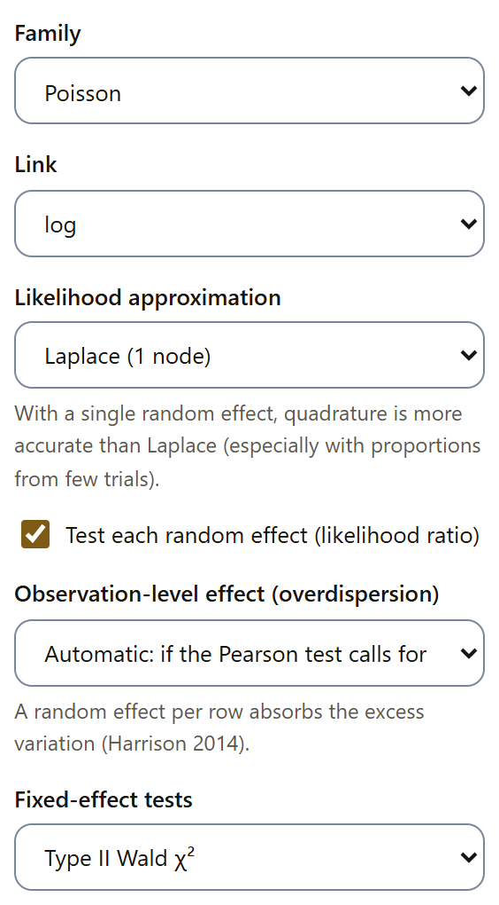

4.15Linear mixed models
A mixed model separates the fixed effects, those chosen on purpose and about which you want to draw conclusions (the hybrids, the rates), from the random effects, which represent a sample of many possible ones (blocks, locations, years, plants measured several times). With it, each source of variation carries its own error, missing plots do not break the analysis, and the information between blocks is not lost.
The six methods of the family run in the R engine inside the browser (section 4.6), with the packages lme4, lmerTest and emmeans; repeated measures use nlme. The engine is downloaded the first time; after that it works offline.
| Method | Purpose |
|---|---|
| Linear mixed model (formula) | Any combination of fixed and random effects, written as a formula. |
| Randomized blocks with random blocks | One to three factors in complete blocks; with missing plots it recovers the inter-block information. |
| Split plot (mixed model) | Main plots, subplots and, if requested, sub-subplots, with their errors as random effects. |
| Lattice and alpha-lattice (inter-block recovery) | Random incomplete blocks within replicates: the means recover the inter-block information. |
| Trials at several locations | Fixed genotypes at locations with replicates; the location and the genotype × location interaction, random. |
| Repeated measures over time | The same unit measured on several dates: choose the covariance structure between dates. |
The model written as a formula

The Model terms (what goes after “~”) field takes the right-hand side of the formula. Fixed effects are written as in the general linear model (section 4.10); each random effect goes in parentheses with its grouping:
(1 | bloque): a level of its own for each block (random intercept).(1 | bloque/parcela): plots within blocks.(dias | planta): a slope of its own for each plant, correlated with its intercept; with(dias || planta), without that correlation.
Below the field, the app explains each term it read, so you can confirm that the model is the one you intended. Numeric columns that are treatments (a rate) are checked in Numeric columns that are treatments (factor).
Next come Compare the means of (checkboxes with the fixed factors that enter as main effects; by default, the first three), Within each level of (with two or more factors, to compare one separately at each level of another when they interact), the Comparison adjustment (Tukey, Bonferroni, Holm, Šidák or No adjustment (LSD)), the Sums of squares (type III, II or I), the Degrees of freedom for the tests (Satterthwaite, or Kenward-Roger, more exact with few groups and slower) and the Estimation: REML, which gives unbiased variance components, or maximum likelihood, to compare models with different fixed effects. Kenward-Roger only works with REML. At the end come the Confidence level and the Significance level.
With the maize and random blocks (hibrido * dosis + (1 | bloque)), the tests of the hybrids, the rates and their interaction give the same F values as the block ANOVA (60.63, 292.15 and 1.47), because the data are balanced. What changes is the standard error of the means: it includes the block variance (43.9% of the random variation), so the hybrid means carry an SE of 0.1079 with 4.25 degrees of freedom, while their differences, in which the blocks cancel out, keep the 33 degrees of freedom of the error.
With the two maize factors, the result brings ten tables: the tests of the fixed effects, the variance components with their percentage, the test of the random effects (likelihood ratio, like lmerTest::ranova; its p is conservative, because a variance cannot be negative, and the true one is usually half of it), the marginal means of each factor with their letters and their pairwise comparisons, the coefficients, the predictions of the random effects (BLUP) and the model fit. When a factor has more than 45 pairs, its table of pairs is not shown, though the letters are; with more than 50 levels, only the means. If the BLUPs exceed 120 rows, their table does not appear either: a note below the coefficients says so, and the equivalent R code gives them with ranef().
The plots are the marginal means of the first compared factor, with their interval and their letters (with Within each level of, one line for each level of the other factor), the residuals against the fitted values and their Q-Q plot. The traffic light checks the normality of the residuals (Shapiro-Wilk), the normality of the random effects (the BLUPs of the first grouping, if it has 5 levels or more), the equality of variances (Levene with the median, among the levels of the first fixed factor) and the optimizer warnings; a singular fit shows in amber.
Designs as mixed models
The other four methods ask for the roles of the design, build the formula themselves and show it below the form (“Model: …”). Numeric columns that act as treatments are taken as factors, and the tests use type III sums of squares; the other options are those of the formula model. In randomized blocks with two or three factors and in split plots, the form also offers Within each level of.
Split plots ask for the Main-plot factor, the Subplot factor, if needed the Sub-subplot factor (optional), and the Blocks (random); they include the blocks and the main plots (and, with a third factor, the subplots) as random effects. If the main plots were randomized without blocks, leave — no blocks — and choose the Replicate (identifies each main plot). With Yates’s oats (1935), the tests are those of the stratum analysis of section 4.10, but the mixed model remains exact with missing plots, when the stratum analysis no longer is. To see nitrogen separately within each variety, choose the variety in Within each level of: the means table gives the nitrogen letters within each variety, and the plot draws one line per variety.

| Group | Variance | SD | % of total |
|---|---|---|---|
| bloque:variedad (the main plots) | 106.1 | 10.30 | 21.31 |
| bloque | 214.5 | 14.65 | 43.10 |
| Residual | 177.1 | 13.31 | 35.59 |
In the lattice and alpha-lattice, choose the Treatments (genotypes, varieties), the Replicate and the Incomplete block (within replicate). The incomplete blocks are random, and the genotype means recover the inter-block information that the intra-block analysis (section 4.10) wastes; the Replicates also random checkbox changes the model when the replicates are also a sample. With the alpha-lattice of 24 genotypes, the genotypes differ (F(23, 34.7) = 5.45, p < 0.001) and the blocks within replicates account for 42.1% of the random variation.
Trials at several locations ask for the Genotypes (fixed), the Location or environment and the Replicate (within each location); they set the location, the replicate within each location and the genotype × location interaction as random. The Fixed locations (only these locations are of interest) checkbox makes them a fixed effect. In the oats with 14 environments, the genotypes differ (F(9, 117) = 5.41) and the environment accounts for 79.7% of the variation, against 6.5% for the interaction. There the BLUPs add up to 196 rows (14 environments, 42 replicates and 140 genotype × environment combinations), so their table is not shown and the note below the coefficients says so. To study the interaction itself (stability, AMMI, GGE) there is the multi-environment family (section 4.20).
At the foot of randomized blocks, split plots and lattice as mixed models, the “Continue in the LABG suite” strip suggests AgriDesign, which generates the randomization, the field map and the field sheet of the design (chapter 10).
Repeated measures over time
When the same plant, plot or animal is measured on several dates, the measurements of one unit resemble each other, and all the more the closer the dates are. The method asks for the Time (measurement date) (numeric or factor), the Unit measured at each date (plant, plot, animal) (its number may repeat in each treatment: the unit is the combination of unit, treatment and block), the Treatment factors (up to 2; optional) and the Blocks. The Covariance structure between dates can be set or left at The best by the criterion (all are compared), which fits the candidates and chooses the one with the lowest value according to the Criterion to choose it (AIC or BIC). Continuous AR(1) enters only with numeric time, and the unstructured one with 8 dates or fewer (unless requested); one that cannot be fitted is marked “could not be fitted”.
| Structure | Parameters | AIC | BIC | |
|---|---|---|---|---|
| Independent | 24 | 486.6 | 535.6 | |
| Compound symmetry | 25 | 474.3 | 525.4 | |
| Heterogeneous compound symmetry | 29 | 431.4 | 490.6 | |
| AR(1) | 25 | 451.8 | 502.8 | |
| Heterogeneous AR(1) | 29 | 420.1 | 479.4 | selected |
| Continuous AR(1) | 25 | 451.8 | 502.8 | |
| Unstructured | 38 | 427.6 | 505.3 |
The conclusion says which structure won and tests the treatments, time and their interaction. AR(1) assumes that the correlation decreases with the distance between dates (φ, φ², φ³…); the heterogeneous version also allows a variance of its own for each date, which is needed when the plant grows and so does its variation. Continuous AR(1) uses the actual distance between unequally spaced dates. In the maize, heterogeneous AR(1) wins, with φ = 0.778 between neighboring dates.

Treatment alone has no effect (F(3, 57) = 1.39, p = 0.256), but its interaction with time does (F(12, 57) = 4.29, p < 0.001): at 15 days the four rates measure the same, and from 30 days on the control without nitrogen falls behind. That is why the app proposes comparing the treatments Within each level of the date, and its means table gives the letters for each date separately. Another table gives the estimated matrix of covariances and correlations between dates.
The tests use the error degrees of freedom, N − p, for all terms, like nlme. The traffic light checks the normality of the normalized residuals (Shapiro-Wilk) and the equality of their variances between dates (Levene); if either fails, it proposes a heterogeneous structure or a transformation, and with a positive response Try the alternative runs the logarithm (section 4.7).
4.16Variance components, heritability and repeatability
Three methods for quantitative genetics and breeding, which run in the browser without the R engine: they estimate the variance components by REML (with the average information algorithm) and were validated against lme4.
Variance components
They tell how much variation each random factor contributes. Choose the Random factors (up to 4), How they are related (Crossed; Nested (each within the previous ones), in table order; or Crossed, with their two-way interactions) and, if needed, the Fixed factors (optional, up to 3), which enter as main effects and are not tested: for their F tests there is the linear mixed model. In the alpha-lattice, with the genotypes fixed and the blocks nested in the replicates, the replicate contributes 43.6% of the variance (σ² = 0.1139), the blocks within the replicate 23.7% and the error 32.6%. Each component carries its SE and its likelihood ratio test, with the p of the mixture ½χ²0 + ½χ²1, because a variance cannot be negative: the replicate gives χ² = 6.41 (p = 0.006) and the blocks, χ² = 5.01 (p = 0.013). With only three replicates, the replicate variance is very imprecise: its SE, 0.128, is larger than the estimate. The plot shows the percentage of the total variance that each component contributes.
For a random intercept, the test of the mixed models of section 4.15 (ranova) gives the p of χ² with 1 degree of freedom, which is conservative; these three methods give that of the mixture ½χ²0 + ½χ²1, which is half as large. With the same model (and REML), the variance and the χ² agree: only the way the p is calculated changes.
Heritability and genotype BLUPs
With the genotypes as random, the method estimates the genetic variance, the heritability and the genotypic value of each one. Choose the Genotypes (random), the Replicate or complete block (fixed), the Incomplete block within replicate (random), for the alpha-lattice and other designs with incomplete blocks, and the Environment or location (fixed); with several environments, the genotype × environment interaction enters as random and the conclusion compares its variance with the genetic variance. Below the roles, the app shows the model it built (“Model: …”), and the title of the result states the design it understood. For the selection gain, choose the Selected proportion (from 5% to 50%) and, in Select the values that are, the highest (yield, weight, content) or the lowest (days to flowering, height, damage).
If the replicate or the incomplete block is missing, its variation goes into the error, without warning, and the heritability usually drops: with the alpha-lattice, the mean-basis H² is 0.840 with the replicates and the blocks, 0.780 with the replicates only and 0.580 with neither (the title then says “completely randomized”). The app stops only when there is a single plot per genotype and environment, because then the genotype × environment interaction is confounded with the error.

The conclusion begins with the genetic variance (σ²g = 0.1429, χ² = 23.62, p < 0.001). The mean-basis heritability is 0.840 ± 0.063: 84% of the variation among the genotype means is genetic. Since the trial has incomplete blocks, the heritability table also gives the Cullis (0.809) and Piepho and Möhring (0.803) heritabilities, the most accurate with unbalanced data or incomplete blocks (Schmidt et al., 2019), and the plot-level heritability (0.636). The genetic parameters include the genetic (8.44%) and error (6.38%) coefficients of variation; their ratio, 1.323, greater than 1, indicates favorable conditions for selection.
The expected gain from selecting 2 of the 24 genotypes (10% of 24, rounded; the table note gives the actual 8.3% and the selection intensity, i = 1.840) is calculated in three ways: with the mean of the selected BLUPs (0.4881, 10.90% of the mean), with the breeder’s equation i·H²·σF (0.6374) and with the selection differential of the BLUEs times H² (0.4981). The last table ranks the genotypes with their BLUP, their SE, their reliability and their adjusted mean (BLUE), and marks the selected ones (G01 and G05). The BLUPs shrink toward the overall mean in proportion to how little is known about each genotype; that is why, in the plot, the cloud of BLUPs against BLUEs is flatter than the diagonal.
The traffic light of the three methods checks the normality of the residuals and that of the random effects of the first term (Shapiro-Wilk of their BLUPs, with 5 levels or more), outlying observations (residuals of more than 3.5 standard deviations) and the REML fit: whether it converged and whether any component ended at zero, on the boundary and without an SE. With the alpha-lattice, the normality of the residuals shows in amber (p = 0.011 in the heritability): it is a warning, not an error, and it is worth checking for unusual plots.
Repeatability
When the same individual is measured several times (the harvests of a tree, the lactations of an animal), repeatability is the correlation between two measurements of the same individual. Choose the Individual measured several times (tree, plant, animal) and, if needed, the Fixed factors (optional: harvest, year, rater). With 20 guava trees over four harvests (harvest as a fixed factor), r = 0.532 ± 0.116: 53% of the variation between measurements is due to permanent differences between trees. With 3.69 measurements per tree (the harmonic mean), the determination of the permanent value is R² = 0.807, and the conclusion adds that a determination of 90% would require 8 measurements per tree.
| Desired R² | Measurements (η) | Rounded |
|---|---|---|
| 0.80 | 3.53 | 4 |
| 0.85 | 4.99 | 5 |
| 0.90 | 7.93 | 8 |
| 0.95 | 16.74 | 17 |
| 0.99 | 87.25 | 88 |
The last table gives the predicted permanent value of each tree (the overall mean plus its BLUP), with its SE and its reliability. The plots are that value for each tree, from highest to lowest with its interval, and the determination according to the number of measurements, from 1 to 10, which shows how much is gained with each additional harvest.
4.17Generalized linear models
Counts (insects per shoot, lesions per leaf), proportions (seeds germinated out of those sown) and times or concentrations do not have the constant variance or the normal distribution that ANOVA requires. Instead of transforming them, a generalized linear model uses the distribution that suits them and a link that connects the mean with the treatments, and it presents the results on the original scale: rates, probabilities and means.
| Method | Purpose |
|---|---|
| Counts (Poisson and negative binomial) | Poisson, quasi-Poisson or negative binomial, chosen by the overdispersion; treatments in blocks, covariates and exposure. |
| Proportions (binomial) | Binomial or quasibinomial: successes out of n trials or 0/1 responses; logit, probit or complementary log-log link; Firth correction for separation. |
| Skewed positive responses (gamma) | Gamma or inverse Gaussian, for times, concentrations or weights whose variance grows with the mean. |
| Generalized linear model (formula) | Any of the seven families from a written formula. |
| Counts or proportions in random blocks (mixed) | Generalized mixed model with random blocks and, if needed, an observation-level effect. |
| Generalized linear mixed model (formula) | Binomial, Poisson, negative binomial or gamma with random effects written as in lme4. |
The first four run in the browser (iteratively reweighted least squares, validated against R’s glm and glm.nb); the two mixed ones, in the R engine.
Counts
Choose Response: the count, the Treatment factors (up to 3, crossed), the Blocks, the Covariates (optional, up to 2) and the Exposure (optional: area or time sampled), when the units were not sampled equally: with it, the means are rates per unit. The default Family is Automatic (based on overdispersion): the Poisson is fitted and, if Pearson’s test finds overdispersion (more variation than the Poisson allows: p < 0.05 and χ²/df greater than 1.1), the analysis switches to the negative binomial. You can also set the Poisson, the quasi-Poisson or the negative binomial.
The Link is the log; the Poisson and the quasi-Poisson also allow the identity, the square root and the power (μλ, with its Link exponent λ (μ^λ)), and the negative binomial, the identity and the square root. With the automatic family, the list offers only the links that the negative binomial also has (log, identity and square root), because the analysis switches to it if there is overdispersion. Next come the Analysis of deviance (type II by default, type III with sum-to-zero contrasts or sequential type I), the Coefficient intervals (see below) and, as in the mixed models, Compare the means of, Within each level of and the Comparison adjustment.

With the avocado thrips, the Poisson had overdispersion (χ²/df = 2.23, p = 0.002) and the app switched to the negative binomial (θ = 8.390). The block has no effect (p = 0.468) and the treatment does (χ² = 21.34, 4 df, p < 0.001): spinosad leaves 1.483 thrips per shoot, against 7.761 in the control.
The rates are compared on their own scale, with asymmetric intervals (calculated on the link scale and transformed back) and Tukey letters. The tables are the analysis of deviance, the coefficients on the link scale, the rate of each treatment, their pairwise comparisons (as rate ratios) and the model fit. Besides the plot of the rates, the result includes the plot of the Pearson residuals against the fitted values. The traffic light checks overdispersion, Pearson residuals greater than 3 and convergence.
Proportions and skewed responses
For proportions, the Response: successes (germinated, diseased) or 0/1 holds the successes, and you choose the column of Trials in each row (seeds sown, plants assessed), or — the response is 0/1 —. The automatic family starts with the binomial and switches to the quasibinomial if there is overdispersion (with 0/1 it stays with the binomial); the link is logit, probit or complementary log-log. With the beans, the binomial is enough (Pearson χ²/df = 1.18, p = 0.281): the treatment changes germination (χ² = 241.95, 4 df), from 0.2800 in the control to 0.9450 with scarification.
Skewed positive responses are analyzed with the gamma, for times and concentrations whose variance grows with the square of the mean, or with the inverse Gaussian, more skewed, whose variance grows with the cube. The method uses the log by default; the gamma also allows the inverse, the identity and the power, and the inverse Gaussian, 1/μ² (its canonical link), the inverse, the identity and the power. With Box and Cox’s (1964) poisons and the gamma, poison (F = 48.92) and treatment (F = 23.68) have an effect and their interaction does not (p = 0.192), without transforming the survival time as in section 2.9. With the free-dispersion families (gamma, inverse Gaussian, quasi-Poisson and quasibinomial), the dispersion is estimated by Pearson and the tests are F tests; the mean comparisons use t in the gamma and z in the others, like emmeans.
Profile intervals and Firth correction
With the log and logit links, each coefficient carries its ratio (rate ratio, odds ratio or ratio of means) with its interval. In Coefficient intervals, choose Wald (estimate ± z·SE), symmetric on the link scale, or Profile likelihood, like R’s confint() but with the exact root of the profile: it can be asymmetric and is more exact with few data or probabilities near 0 or 1. With the thrips, the rate ratio of spinosad against the control is 0.191; its 95% interval goes from 0.085 to 0.430 with Wald and from 0.080 to 0.418 with the profile. With other links, the profile interval is given on the link scale. In the free-dispersion families the profile uses the Pearson dispersion, and in the negative binomial it keeps θ fixed; if the likelihood does not drop enough toward one side, that limit is shown as “—” and a warning says so.
With 0/1 responses or few trials, separation can occur: a group with 0% or 100% successes. Maximum likelihood drives its coefficient to infinity, and its SE is no longer useful. The Firth correction (for separation: groups with 0% or 100%) checkbox, which appears with the binomial family (or the automatic one) and the logit link, penalizes the likelihood: it gives finite coefficients, tests each coefficient and each term with the penalized likelihood ratio and gives the intervals from the penalized profile, like the logistf package; there is no AIC. When the ordinary fit has separation, its warning ends with “Use Firth’s correction.” and the fit row of the traffic light shows in red.
With the example “Bean: days to germination” (120 seeds from three treatments and three lots), the response germino (0/1) and the formula lote + tratamiento + peso_semilla, all 40 scarified seeds germinated. The table below compares the two fits: without Firth, the scarification coefficient blows up and the Tukey letters do not separate any treatment; with Firth, the treatment has an effect (χ² = 15.15, 2 df, p < 0.001), with no effect of the lot (p = 0.373) or of seed weight (p = 0.317).
| Fit | Coefficient (SE) | Test of the coefficient | Probability of germinating | Letters (control, soaked, scarified) |
|---|---|---|---|---|
| Ordinary | 30.69 (1.06 × 107) | z = 0.00, p = 1.000 | 1.0000 | a, a, a |
| Firth | 3.505 (1.413) | χ² = 15.07, p < 0.001 | 0.9876 | b, ab, a |
![The result of the logistic regression with the Firth correction for the beans: the title Generalized linear model: binomial, logit link (Firth); the conclusion, which says that the ordinary fit had separation (40 probabilities at 0 or 1) and that the penalized likelihood gives finite estimates, the lot without effect (χ² = 1.97, 2 df, p = 0.373), the treatment with an effect (χ² = 15.15, 2 df, p < 0.001), seed weight without effect (χ² = 1.00, 1 df, p = 0.317), and the highest probability with Escarificada (0.9876) and the lowest with Testigo (0.7057); below, the traffic light in green with outlying observations and the Firth fit](../img/en/b4-glm-firth.png)
With a formula and with random effects
The generalized linear model with a formula accepts in Model terms (what goes after “~”) the same terms as the general linear model, with the Numeric columns that are factors (rate, numbered block) checkboxes, and the seven families: binomial, quasibinomial, Poisson, quasi-Poisson, negative binomial, gamma and inverse Gaussian. With the binomial or the quasibinomial, indicate the trials column (or the response is 0/1); with the count families, the exposure if needed.
Generalized mixed models run in the R engine (lme4, car and emmeans). Counts or proportions in random blocks (mixed) asks for the Treatment factors (up to 3, crossed) and the Blocks (random); Generalized linear mixed model (formula) asks for the Model terms including the random effects (what goes after “~”), such as tratamiento + (1 | bloque) or (1 | localidad/bloque). Both accept the trials column (with the binomial) and the exposure (with the Poisson or the negative binomial). The families are Poisson, binomial, negative binomial and gamma; the gamma allows only random intercepts, such as (1 | bloque), and estimates its dispersion. The model builder (section 4.4) sends a count response (Poisson) or a positive skewed response (gamma) with random effects to the formula model.

- Likelihood approximation: Laplace (1 node), by default, or adaptive Gauss-Hermite quadrature with 5, 10 or 25 nodes, more exact, especially with proportions from few trials. It appears with the binomial or the Poisson and a single random effect, an intercept per group (in the random-blocks method, always). The observation-level effect is a second random effect: with Yes, always, the app asks you to use Laplace; if the automatic mode adds it, the app returns to Laplace on its own and says so.
- Test each random effect (likelihood ratio), checked by default: compares the model with the one without that effect (with a model without random effects if none is left); its p is conservative. With the gamma it is not offered, because its Laplace likelihood cannot be compared with that of the model without random effects.
- Observation-level effect (overdispersion), with the Poisson or the binomial with trials: Automatic: if the Pearson test calls for it (p < 0.05 and χ²/df greater than 1.1), Yes, always or No. It adds a random effect per row that absorbs the extra variation (Harrison, 2014).
- Fixed-effect tests: Type II Wald χ² or Type III Wald χ² (sum-to-zero).
The result includes the Wald tests (their note states the approximation used), the coefficients (with the log and logit links, also their ratios with Wald intervals), the variances of the random effects on the link scale, the test of each random effect, the means on the response scale (with the random effects at zero), their pairwise comparisons and the fit, with the θ of the negative binomial or the dispersion of the gamma. The traffic light checks overdispersion (or dispersion), Pearson residuals greater than 3 and the optimizer warnings.
| Model | Blocks | Test of the treatment | Control | Spinosad |
|---|---|---|---|---|
| Negative binomial (automatic) | fixed | χ² = 21.34, 4 df, p < 0.001 | 7.761 | 1.483 |
| Quasi-Poisson (formula, type I) | fixed | F = 3.69, p = 0.023 | 7.584 | 1.452 |
| Mixed Poisson with observation-level effect | random | Wald χ² = 16.07, 4 df, p = 0.003 | 7.283 | 1.385 |
In the mixed model, the block variance ends up at zero and the app says so in the traffic light (“Singular fit: some variance component is zero”): in this trial the blocks contributed nothing, as their test in the fixed-effects model already indicated (p = 0.468).